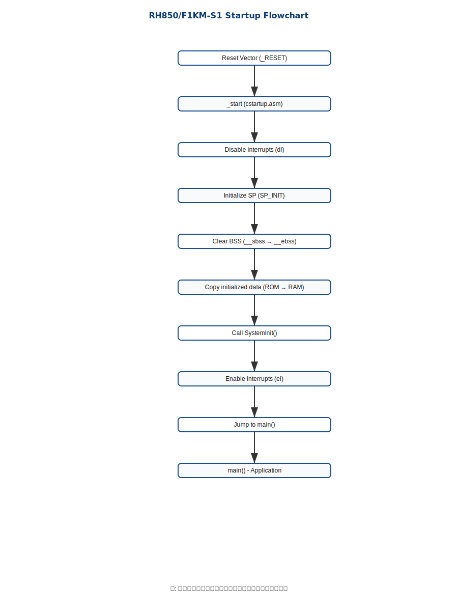
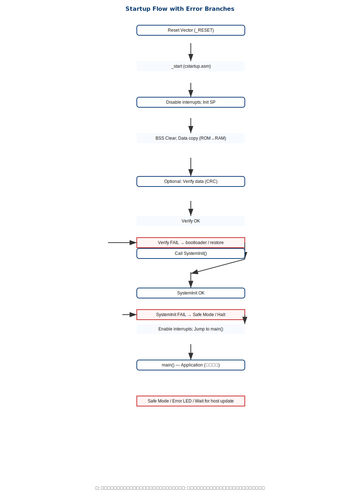
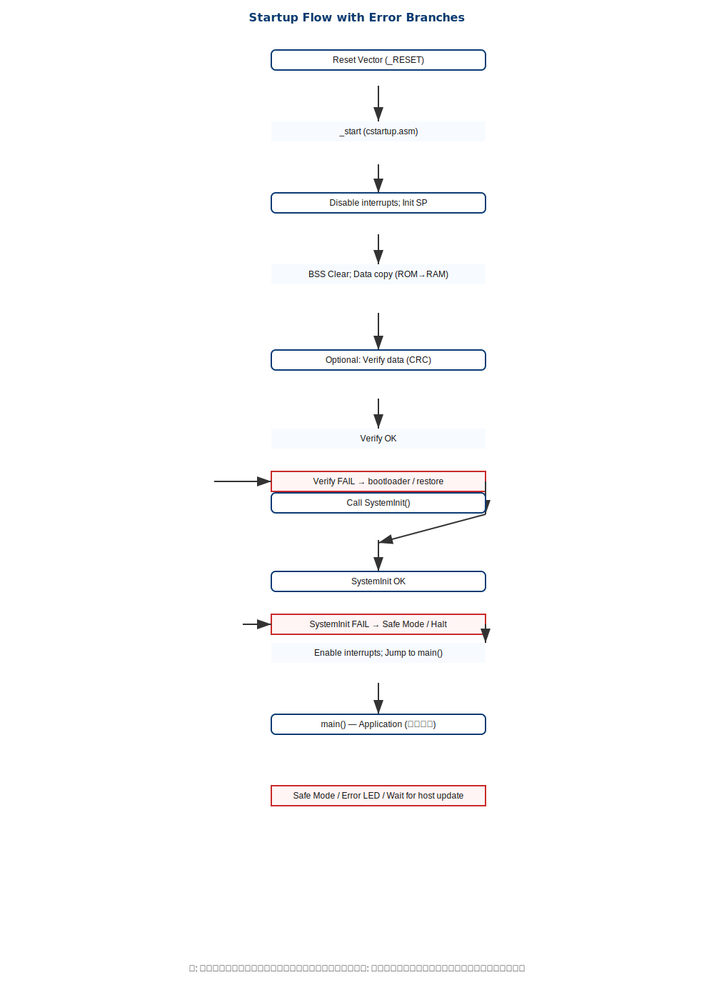

この文書は RH850/F1KM-S1 向けに作成したスタートアップ一式（アセンブリ、リンカスクリプト、システム初期化、サンプルアプリ）についての詳細設計を示します。
src/cstartup.asm : スタートアップ（リセットベクタ、BSSクリア、データコピー、SystemInit 呼び出し）linker_script.ld : メモリマップとセクション割当src/system_rh850.c : システム初期化（MainOSC/PLL/クロック分周、割り込み初期化）inc/system_rh850.h : システム初期化のヘッダinc/rh850_regs.h : レジスタ定義src/main.c : サンプルアプリ（LED点滅）| 領域 | 開始アドレス | サイズ | 用途 |
|---|---|---|---|
| Code Flash | 0x00000000 | 2MB | プログラムコード |
| Data Flash | 0x01000000 | 64KB | データ保存 |
| RAM | 0xFEDE8000 | 256KB | データ・スタック |
_RESET）cstartup.asm::_start 実行（割り込み無効化、SP 初期化、BSS クリア、データコピー、SystemInit() 呼び出し、割り込み有効化、main() へ移行）ブート・スタートアップのフロー図（下図参照）
起動メインフロー（細分化）

`SystemInit()` の詳細フロー

起動時／初期化時の代表的な失敗（MOSC未安定、PLLロック失敗、データ不一致、ウォッチドッグ）に対する分岐例を示します。
 

BSS をワード単位で 0 埋め、データを ROM から RAM へワードコピーします。アライメントとセクションアドレスがリンカ設定と一致することを確認してください。
MainOSC の有効化、PLL の設定・待ち、クロック分周・切替、割り込みコントローラ初期化などを行います。`system_rh850.c` を参照してください。
rh850-elf-as -mcpu=g3m -o cstartup.o src/cstartup.asm
rh850-elf-gcc -mcpu=g3m -O2 -I inc -c src/system_rh850.c -o system_rh850.o
rh850-elf-gcc -mcpu=g3m -O2 -I inc -c src/main.c -o main.o
rh850-elf-ld -T linker_script.ld cstartup.o system_rh850.o main.o -o firmware.elf
rh850-elf-objcopy -O ihex firmware.elf firmware.hex